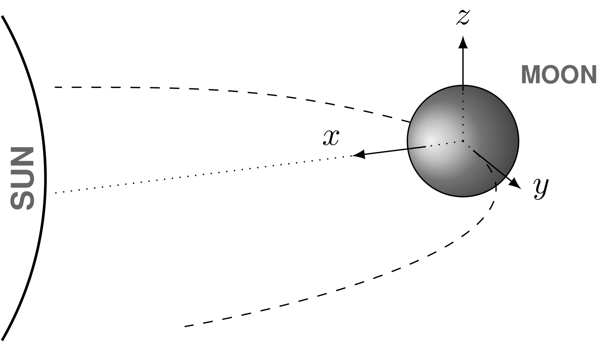

2.1.3 Reference Frames
Alexander Smolka ![]()
Since this work involves several different scales, from nano to planetary, and processes a variety of algorithms, naturally, it requires varying reference frames for its calculations, each fitting for the respective task at hand. This section provides an overview of the relevant reference frames and their transformations. The main two categories are global reference frames, which are indicated by the prescript \({}_{\small\text{G}}\bullet\), and local reference frames, which are indicated by the prescript \({}_{\small\text{L}}\bullet\). Note that the prescripts are only used for additional clarification, for example, when two vectors out of different reference frames are used in the same equation. In most cases, the reference frame is clear from the context, and the prescripts are omitted for the sake of readability.
Global Reference Frames
Global reference frames are used for calculations on a planetary scale, thus providing a coordinate system based on a planetary body. These coordinate systems have their origin at the center of the planetary body, which gives them their body-specific name, for example, selenocentric for the Moon, geocentric for the Earth, and heliocentric for the Sun. If not specified otherwise, all global coordinate systems are subsolar coordinate systems, meaning that the orientation of their base vectors is based on the Sun’s position relative to the planetary body in question. The category can be further divided into two subcategories based on their respective type of coordinates: Cartesian and spherical.
Global Cartesian Coordinate Systems
Positional vectors of the global cartesian coordinate system are defined as \[\begin{equation} \boldsymbol{\mathbf{x}}= \begin{bmatrix} x\\ y\\ z \end{bmatrix} \qquad\text{with } x\in\mathbb{R},\;y\in\mathbb{R},\;z\in\mathbb{R}, \end{equation}\] while velocities are defined as their first temporal derivative, and since all global base vectors \(\hat{\boldsymbol{\mathbf{e}}}_i\) are time-invariant, it resolves to \[\begin{align} \dot{\boldsymbol{\mathbf{x}}} = \frac{d}{dt} \left( \boldsymbol{\mathbf{x}}\right) &= \frac{d}{dt} \left( x\hat{\boldsymbol{\mathbf{e}}}_x+ y\hat{\boldsymbol{\mathbf{e}}}_y+ z\hat{\boldsymbol{\mathbf{e}}}_z\right) = \dot x\hat{\boldsymbol{\mathbf{e}}}_x+ \dot y\hat{\boldsymbol{\mathbf{e}}}_y+ \dot z\hat{\boldsymbol{\mathbf{e}}}_z= \begin{bmatrix} \dot x\\ \dot y\\ \dot z \end{bmatrix} \\ & \text{with } \dot x\in\mathbb{R},\;\dot y\in\mathbb{R},\;\dot z\in\mathbb{R}. \label{eq:global_cartesian_velocity} \nonumber \end{align}\]
The coordinate system is fixed in place, with its origin at the center of the planetary body, and its base vectors pointing in the direction of the planetary axes, shown in Figure 1. The base vectors are defined as \(\hat{\boldsymbol{\mathbf{e}}}_x\) pointing towards the Sun, \(\hat{\boldsymbol{\mathbf{e}}}_y\) pointing towards positive longitude (east), and \(\hat{\boldsymbol{\mathbf{e}}}_z\) pointing towards positive latitude (north). The base vectors are orthogonal to each other. Note that in the figure below, the global prescript was omitted for the simplicity of the visualization.

Global Spherical Coordinate Systems
Local Reference Frames
Local reference frames are used for calculations on a smaller scale. One example is the calculation of thermal desorption velocities (see Thermal Sorption), which only depends on the local surface temperature.
Local Cartesian Coordinate Systems
Local Spherical Coordinate Systems
Transformations
Often it is useful to describe one problem in a different reference frame than another, requiring a transformation between the two.
To Global Cartesian Positions
Let \(\boldsymbol{\mathbf{r}}= \left[r, \vartheta, \varphi\right]^T\) be a global spherical position vector given in spherical elements. The transformation to a global cartesian position vector \(\boldsymbol{\mathbf{x}}= \left[x, y, z\right]^T\) is identical to the transformation presented in Eq. \(\eqref{eq:cartesian_coordinate_spherical_elements}\): \[\begin{equation} \boldsymbol{\mathbf{x}}= \begin{bmatrix} r\cos\vartheta\cos\varphi\\ r\sin\vartheta\cos\varphi\\ r\sin\varphi \end{bmatrix} = \begin{bmatrix} x\\ y\\ z \end{bmatrix} \end{equation}\] with \(r\in\mathbb{R}^+,\;\vartheta\in\left[-\pi,\pi\right),\;\varphi\in\left[-\frac{\pi}{2},\frac{\pi}{2}\right]\).
To Global Spherical Positions
Let \(\boldsymbol{\mathbf{x}}= \left[x, y, z\right]^T\) be a global cartesian position vector given in cartesian elements. The transformation to a global spherical position vector \(\boldsymbol{\mathbf{r}}= \left[r, \vartheta, \varphi\right]^T\) is identical to the transformation presented in Eq. \(\eqref{eq:spherical_coordinate_cartesian_elements}\): \[\begin{equation} \boldsymbol{\mathbf{r}}= \begin{bmatrix} \sqrt{x^2 + y^2 + z^2} \\ \mathop{\mathrm{sgn}}\left(y\right)\cdot\cos^{-1}\left(\frac{x}{\sqrt{x^2 + y^2}}\right)\\ \sin^{-1}\left(\frac{z}{\sqrt{x^2 + y^2 + z^2}}\right) \end{bmatrix} \end{equation}\] with \(x\in\mathbb{R},\;y\in\mathbb{R},\;z\in\mathbb{R}.\)
To Global Cartesian Velocities
Let \({}_{\small\text{L}}\boldsymbol{\mathbf{v}}= \left[{}_{\small\text{L}}v_x, {}_{\small\text{L}}v_y, {}_{\small\text{L}}v_z\right]^T\) be a local cartesian velocity vector given in cartesian elements, and \({}_{\small\text{G}}\boldsymbol{\mathbf{r}}= \left[{}_{\small\text{G}}r, {}_{\small\text{G}}\vartheta, {}_{\small\text{G}}\varphi\right]^T\) be a global spherical position vector given in spherical elements. The transformation to a global cartesian velocity vector \({}_{\small\text{G}}\boldsymbol{\mathbf{v}}= \left[{}_{\small\text{G}}v_x, {}_{\small\text{G}}v_y, {}_{\small\text{G}}v_z\right]^T\) is given by \[\begin{equation} {}_{\small\text{G}}\boldsymbol{\mathbf{v}}= \begin{bmatrix} -{}_{\small\text{L}}v_x\sin{}_{\small\text{G}}\vartheta- {}_{\small\text{L}}v_y\cos{}_{\small\text{G}}\vartheta\sin{}_{\small\text{G}}\varphi+ {}_{\small\text{L}}v_z\cos{}_{\small\text{G}}\vartheta\cos{}_{\small\text{G}}\varphi\\ {}_{\small\text{L}}v_x\cos{}_{\small\text{G}}\vartheta- {}_{\small\text{L}}v_y\sin{}_{\small\text{G}}\vartheta\sin{}_{\small\text{G}}\varphi+ {}_{\small\text{L}}v_z\sin{}_{\small\text{G}}\vartheta\cos{}_{\small\text{G}}\varphi\\ {}_{\small\text{L}}v_y\cos{}_{\small\text{G}}\varphi+ {}_{\small\text{L}}v_z\sin{}_{\small\text{G}}\varphi \end{bmatrix} \end{equation}\] with \({}_{\small\text{L}}v_x\in\mathbb{R},\;{}_{\small\text{L}}v_y\in\mathbb{R},\;{}_{\small\text{L}}v_z\in\mathbb{R}\) and \({}_{\small\text{G}}r\in\mathbb{R}^+,\;{}_{\small\text{G}}\vartheta\in\left[-\pi,\pi\right),\;{}_{\small\text{G}}\varphi\in\left[-\frac{\pi}{2},\frac{\pi}{2}\right]\).
To Global Spherical Velocities
To Local Cartesian Positions
To Local Cartesian Velocities
Citation
@online{smolka2024,
author = {Smolka, Alexander},
title = {ExESS - {Extraterrestrial} {Exosphere} and {Surface}
{Simulations}},
date = {2024},
url = {https://smolkaa.github.io},
langid = {en}
}